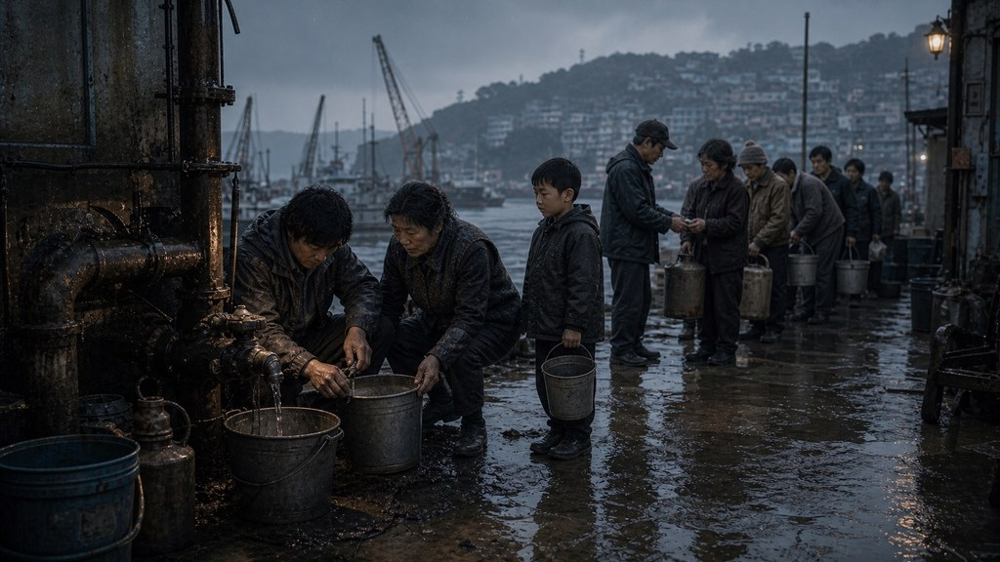
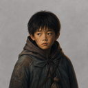

그건 정희네 거야. 애가 밤새 열이 나서 못 내려왔어.

어제 아침 · 부산 감천 공동 급수대
물이 나오는 40분
급수대가 열리기 전인데도 계단 아래까지 빈 통이 늘어서 있었다. 내 통 옆에는 처음 보는 통이 하나 더 놓여 있었다.
제 것 하나 들기도 빠듯한데요.
알아. 말은 그래도 들어다 줄 거잖아.
물이 나오자 밸브 아래로 가느다란 줄기가 새었다. 맨 앞의 아이가 신발을 적시며 손가락으로 가리켰다.

줄을 지키던 아이아저씨, 여기서도 물 나와요.
그건 나오면 안 되는 물인데.
나는 통을 내려놓고 몽키스패너를 꺼냈다. 뒤에서 한숨이 들렸지만 누구도 먼저 통을 들이밀지는 않았다.
천천히 해. 지난번처럼 나사 머리 뭉개지 말고.
지난번은 제가 한 게 아니에요.
그래. 나사 혼자 그랬겠지.
물이 멎자 누군가 내 통부터 채워 주었다. 나는 두 통을 들고 정희네 집이 있는 언덕으로 올라갔다.